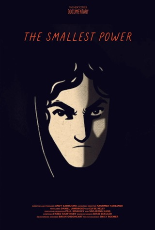

About the film

DC Premiere
November 8, 2026
, 12:20 PM
U.S. Navy Memorial
On a dead-calm morning off the Libyan coast, the Doctors Without Borders ship Geo Barents reaches a deflating rubber boat. Among the dozens of refugees crammed into the boat are Roro, a young Yemeni mother, her husband Hani, their two-month-old baby and two small sons. Before the rescue is complete, an armed Libyan militia intervenes. Hani reaches Europe alone; Roro and the children are taken back to Libya.
Director Sine Plambech, an anthropologist who has studied migration for more than two decades, was filming aboard, and her camera captures what happened in those minutes. She stays with the family as Hani fights from Europe to reunite them and Roro struggles to survive captivity. The result is an urgent human story and a close look at how Europe's policy of outsourcing migration control plays out at sea.
Screening followed by a Q&A with producer Andreas Dalsgaard.
Sine Plambech
Andreas Dalsgaard
At the festival
Sessions about this film
- 2026 · Fri Nov 6 · 2:45pmPanelDX Academy Masterclass: The Making of The Oligarch and the Art Dealer and Rescue, with Andreas DalsgaardAndreas Dalsgaard, Sig Libowitz
More films on these topics

The Smallest PowerAndy Sarjahani2023 · 6 min American PainDarren Foster2022 · 106 min
American PainDarren Foster2022 · 106 min The FacilitySeth Freed Wessler2021 · 26 min
The FacilitySeth Freed Wessler2021 · 26 min FleeSPOTLIGHT: Flee2021 · 90 min
FleeSPOTLIGHT: Flee2021 · 90 min Poppy CrashAndalusia Knoll Soloff2019 · 11 min
Poppy CrashAndalusia Knoll Soloff2019 · 11 min Dark SunsJulien Elie2019 · 154 min
Dark SunsJulien Elie2019 · 154 min